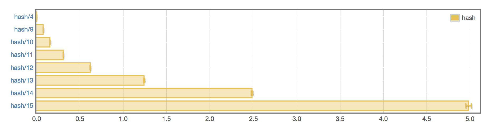

Introduction to Cryptonite
Max Tagher
CTO @ Mercury
We're hiring
Caveats
- I am not a cryptographer
- I am not an expert on Cryptonite
- Goals
- Be comfortable using cryptonite
- Be confident in Haskell's cryptographic capabilities
- Use cryptonite in your own projects
Structure of the Talk
- What is Cryptonite
- Fundamentals
- Through the lens of Type Signatures
- Demos
- Sidebar Topics
Cryptonite
- One stop shop for Haskell cryptography
- 18 Ciphers
- 5 Key-Derivation Functions (KDFs)
- 3 Message Authentication Code functions (MACs)
- 38 Hashes
- Public Key Crypto (e.g. RSA)
- Random number generation
- Mathematical primitives (e.g. primes)
- etc.
Cryptonite
- Replaces: nonce, otp, bcrypt, pwstore-fast, etc.
- pwstore-fast not updated in four years
- otp merged into cryptonite
- More unified interface
Type Signature: Argon2
hash :: ( ByteArrayAccess password
, ByteArrayAccess salt
, ByteArray out
)
=> Options
-> password
-> salt
-> Int
-> CryptoFailable out
Fundamental: Memory Package
Memory
- Low-level memory functions
- e.g. get the first byte of an array of bytes, convert encodings, etc.
- Typeclass-based
- More generic than using ByteString
ByteArrayAccess
- Read access to an array of bytes
index :: ByteArrayAccess a
=> a
-> Int
-> Word8
constEq :: ( ByteArrayAccess bs1
, ByteArrayAccess bs2)
=> bs1
-> bs2
-> Bool
ByteArray
- Allows creating an array of bytes
append :: ByteArray bs
=> bs
-> bs
-> bs
convert :: ( ByteArrayAccess bin
, ByteArray bout)
=> bin
-> bout
ByteArray/ByteArrayAccess
- Instances
- String
- ByteString
- Bytes
- ScrubbedBytes
Type Signature: Argon2
hash :: ( ByteArrayAccess password
, ByteArrayAccess salt
, ByteArray out
)
=> Options
-> password
-> salt
-> Int
-> CryptoFailable out
Fundamental: CryptoFailable
CryptoFailable
data CryptoFailable a =
CryptoPassed a -- Right
| CryptoFailed CryptoError -- Left
CryptoFailable
- In module Crypto.Error
- Is an instance of Monad
- Utility functions to convert to:
- CryptoError is an enum of 20 possible errors
Type Signature: Bcrypt
hashPassword :: ( MonadRandom m
, ByteArray password
, ByteArray hash)
=> Int
-> password
-> m hash
Fundamental: MonadRandom
getRandomBytes :: ByteArray byteArray => Int -> m byteArray
- IO is an instance
- (You'll frequently need type annotations for this function)
main = do
(byteString :: ByteString) <- getRandomBytes 32
-- Use the bytes
Example: BCrypt
- Password hashing function
- Specialized for short keys (user-input passwords)
Password Hashing with BCrypt
- Crypto.KDF.BCrypt
hashPasswordvalidatePasswordEither
Demo
Password hashing with BCrypt
TOTP Background
- "Time-Based One-Time-Password"
- Server generates a secret key
- The secret key is shared with a client
- To authenticate, both the server and client run the TOTP algorithm using the current time as the input
TOTP-Google Authenticator
- Most famous implementation
- Base32 encode the secret key, and remove padding
- Some restrictions, like only 30 second intervals
- Authenticator app reads the key as a QR code
Crypto.OTP
totpVerify
defaultTOTPParams
Procedure
- Generate a secret key and store it in a database, marking the code as unverified.
- Return the encoded secret key to the client
- The client should render a QR code with the data:
otpauth://totp/NAME?secret=ENCODED_SECRET&issuer=NAME
Procedure
- The user should scan the QR code using Google Authenticator, then submit their 6 digit code ('OTP').
- Use
totpVerify with defaultTOTPParams to validate the code, then mark the code as verified.
- Future login attempts should require an OTP.
Data.Memory.Encoding
convertToBase :: (ByteArrayAccess bin, ByteArray bout) => Base -> bin -> bout
Encoding
- Replaces e.g. base64-bytestring, base32-bytestring, base32-string, etc.
- base32-bytestring not updated in five years
- base32-string performs incorrect conversion in some cases
AEAD
- Authenticated Encryption with Associated Data
- Authenticated -> Can tell the data isn't forged
AEAD
- Supports encryption and/or authentication
- Example: Network packets
Demo
Encrypting using AEAD
| KDF |
6 lower case letters |
8 lower case letters |
8 ASCII |
10 ASCII |
| DES CRYPT |
< $1 |
< $1 |
< $1 |
< $1 |
| MD5 |
< $1 |
< $1 |
< $1 |
$1.1K |
| MD5 CRYPT |
< $1 |
< $1 |
$130 |
$1.1M |
| KDF |
6 lower case letters |
8 lower case letters |
8 ASCII |
10 ASCII |
| PDFKDF2 (100 ms) |
< $1 |
< $1 |
$18K |
$160M |
| bcrypt (95 ms) |
< $1 |
$4 |
$130K |
$1.2B |
| scrypt (64 ms) |
< $1 |
$150 |
$4.8M |
$43B |
Argon2 was released in 2015 and won the Password Hashing Competition
People have weird ideas about the importance of picking password hashes. It's important not to use non-password-hashes. Other than that, which password hash you use? Not so important. —tptacek
Sidebar
BCrypt Benchmarks

AWS C5 (3.0GHz) instance. bcrypt at cost 11 took 95ms on Colin Percival's 2009 laptop—Haskell is much slower
Sidebar
Bytes
Referencing "Cryptographic Hashing in Haskell" by Michael Snoyman
Bytes
- Doesn't track offset/length of slice
- Uses slightly less memory, at the cost of not allowing slicing
ScrubbedBytes
- Memory scrubbed after it goes out of scope
- Show instance doesn't show data
- Eq instance is constant time
Introduction to Cryptonite
@MaxTagher